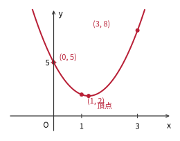

ホーム ＞ 数学I ＞ 2次関数のグラフ
3点 \((0,\ 5)\)、\((1,\ 2)\)、\((3,\ 8)\) を通る放物線をグラフとする2次関数を求めよ。
頂点や軸の情報がないので、一般形 \(y=ax^2+bx+c\) でおく。\(x=0\) の点（\(y\) 切片）があれば \(c\) がすぐ決まる。残り2点で \(a,b\) の連立方程式を作る。
\((0,5)\) を通るので \(c=5\)。
\((1,2)\)：
\((3,8)\)：
② − ①：
①に代入：
\(y=2x^2-5x+5\)：\(x=1\) で \(2-5+5=2\)、\(x=3\) で \(18-15+5=8\)。

【答案（テストに書く形）】
答